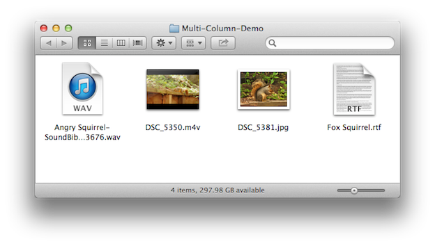
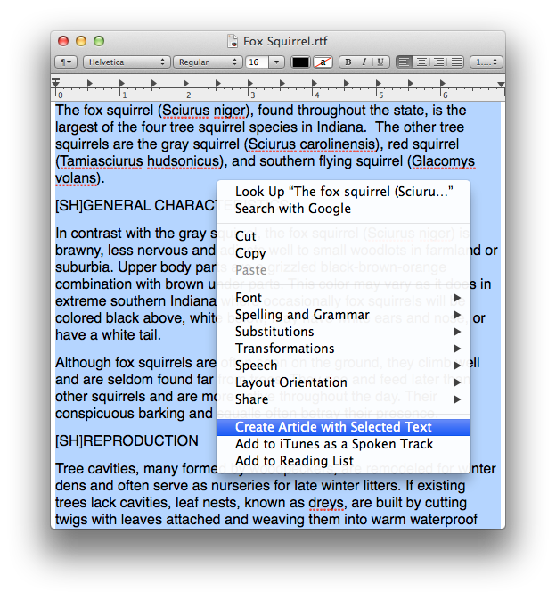
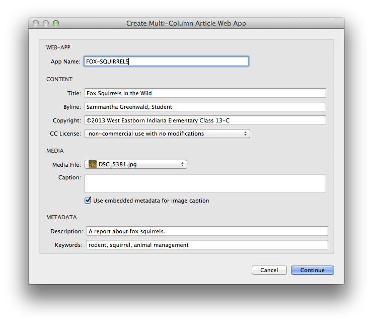
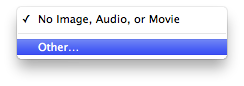
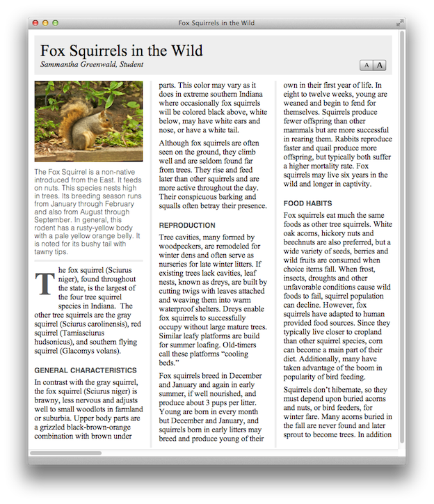

Once the Automator action and service workflow files have been installed, they can be used to create a web-app. In this tutorial, you will create a multi-column web-app by following these steps:
To begin the tutorial, download the provided demo kit.
DO THIS ►Download the ZIP archive containing the Multi-Column demo materials. If needed, double-click the ZIP archive to unpack it to a new folder containing the tutorial items.
The demo kit provided with this tutorial contains a text file to be used as the content for the article, and various supporting media files, including an audio file, video file, and image file (see below).

Begin the process of creating a multi-column publication by following these steps:
Open the Source Text File
The installed Automator action and service are designed process text selected in applications that support the standard contextual menu, such as TextEdit.
DO THIS ► Open the text file Fox Squirrel.rtf by double-clicking its icon. By default, the file should open in the TextEdit application.
Activate the Service
With the document open in TextEdit, you are now ready to use its content to create a multi-column web-app.
DO THIS ► Select all of the text in the document by selecting Select All from the Edit menu, or typing Command-A (⌘-A)
DO THIS ► With the document text selected, summon the contextual menu by right-clicking in the selection, or clicking in the selection while holding down the Control key. (see below)

DO THIS ► At the bottom of the contextual menu, select the menu option titled Create Article with Selected Text (see above). NOTE: on some computers, the service may be listed within a Services sub-menu on the contextual menu.
Enter Information in the Action Interface
Once the service has been selected from the contextual menu, it will run the corresponding Automator service workflow, using the selected text as input for the workflow. The interface for the Create Multi-Column Article Web App action will be displayed for your input and choices. (see below)

DO THIS ► Enter the name for the web-app, along with the corresponding content information, metadata, and license choice.
DO THIS ► Include a media item by selecting Other… from the Media File popup menu, and locating and selecting one of the media files from the demo kit, in the forthcoming file picker dialog. If the media file is the provided image, you can select the checkbox to use its embedded caption.

DO THIS ► Once a media item has been chosen, and the information and metadata have been entered, click the Continue button to have the workflow create a folder on the desktop containing the web-app.
View the Result
Once the service has completed, it will open the created web-app in Safari for viewing (see below).

The article can be scrolled horizontally, and the type size of the article text adjusted using the buttons at the top right of the first page (see above).
In the next segment, we’ll examine the use of the Single-Page Web-App design.